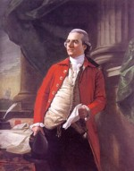

Elkanah Watson
Elkanah Watson was born in January 1758. He was the son of Elkanah and Patience Mendon Watson of Plymouth, Massachusetts. In 1773, he was apprenticed to a Providence merchant. After the outbreak of hostilities in 1775, he served the Revolutionary cause as a courier for George Washington and others. 
During the war years, he traveled up and down the Atlantic coast on "Patriot" business. In 1779, he was sent to France with dispatches for Benjamin Franklin. Wartime travels in Europe and America provided fuel for his memoirs. While in France, he became a prominent merchant. After the war, he returned to the United States and lived for a time in North Carolina. However, he failed to prosper in the West India trade.
In March 1789, he married Rachel Smith of Norton, Massachusetts. In March 1790, their twin daughters were christened at St. Peter's Episcopal church. [One of them, Emily, died in Detroit in 1817.]
About the time of his marriage, he had moved to Albany. In 1790, his household was configured on the third ward census. A year earlier, he advertised in the newspaper that he was offering for sale "fish, liquor, cookeryware" at his Market Street address. Rather quickly, he was prominent in Albany business, had become a land speculator, promoter of public works, and one of the founders of the Bank of Albany. His passion for internal navigation (canals) was shared by important Albany personages including General Philip Schuyler.
During the mid-1790s, he also had a residence north of the city in an emerging suburb known as the "Colonie." Later, in identifying his new neighbors, he would observe in some detail that the area "was the resort for French Emigrants."
By 1800, he had relocated his operations to a large new home near the waterfront in the first ward. During this time, he was forming strong (and mostly negative) opinions of the Albany scene that were later articulated in his published memoir.
In 1807, Watson left Albany to raise Merino sheep on his farm at Pittsfield, Massachusetts. During those years, he continued to travel and was involved in promoting county agricultural fairs.
In 1816, he again was living in Albany with an address listed in the city directory of "474 Washington Avenue." His wife died in 1818. In 1828, he moved again - settling down on the shores of Lake Champlain. There, he authored a number of often-cited works on agricultural and economics topics. His son, Winslow C. Watson, carried on Elkanah's work - most notably with Men and Times of the Revolution, or Memoirs of Elkanah Watson; including Journals of Travels in Europe and America from 1777 to 1842; with his Correspondence with Public Men, and Reminiscences and Incidents of the Revolution (New York and London, 1855). That work memorialized his father's dedication to developing the resources of the new United States.
Elkanah Watson died in Port Kent, New York in December 1842. He had lived more than seventy-four years.
Although he actually lived in Albany for only about two decades and never really became a part of the Albany community, according to his son and chief apologist, Elkanah Watson's dedication to improvement profoundly influenced the city's development in banking, education, and public works. Even without much corroborating evidence, this readily available resource has been cited frequently in subsequent histories of Albany. Thus, many people today believe that Elkanah Watson stood in the front rank of the agents of change during the late eighteenth-early nineteenth centuries.
Online biographies: Begin with Wikipedia; geni.com; Cortland connection; Rescue of John Brown; Canal promoter; Bookrags;
This handsome portrait by John Singleton Copley and dated 1782 is most frequently seen. It resides at the Princeton University Art Museum. A copy by Albany artist Ezra Ames dated 1809 is now in the collection of the Albany Institute of History and Art is often encountered. Another likeness, an engraving, by John Wesley Paradise, is seen in print and online.
{kind=link}